Heguri, Nara: things to do, food and stays
Heguri · Nara
Heguri
Highlighted on the Nara map.

Stay
わんわんパラダイス 奈良生駒

Wanwan Paradaisu Nara Ikoma
信貴山 大本山 千手院
Shigi Yama Omoto Yama Senju Inn
Inn in Shigiyama, Heguri with kaiseki dinners.
Dining
鳥喜久

Tori Yoshihisa
mamma
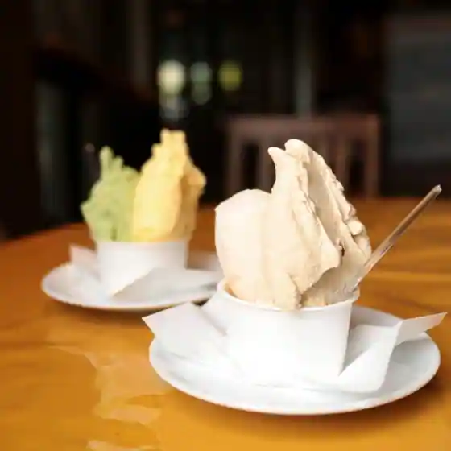
mamma
ハナナ
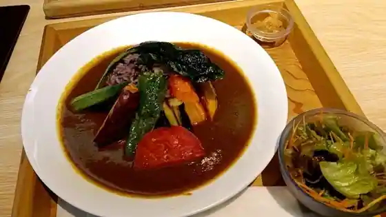
Hanana
曽我乃家本店
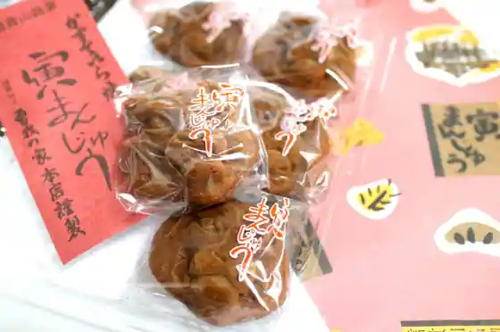
Soga No Kahon
アベノ日本一
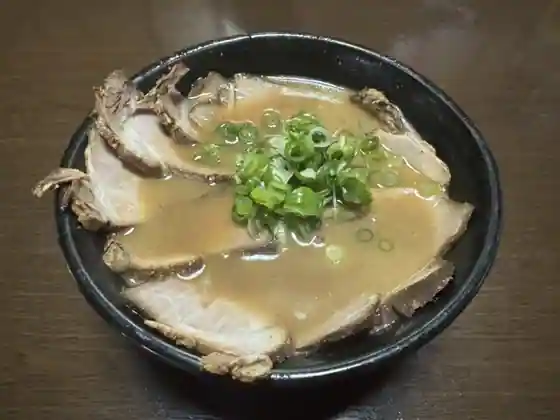
Abeno Nippon'Ichi
コモレビガーデン
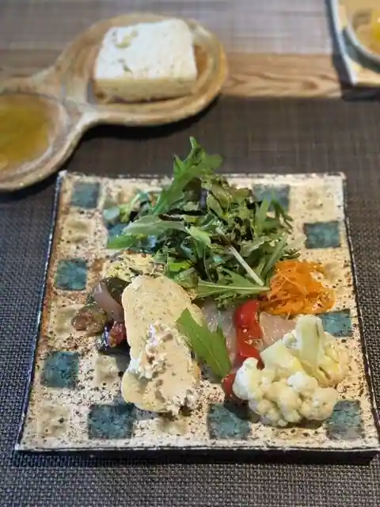
Komorebi Garden
スーリール ダンジュ 平群店
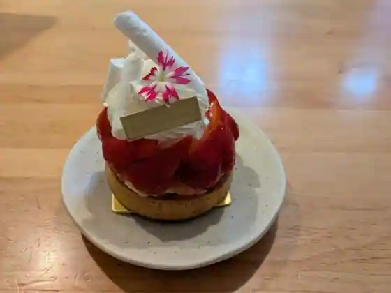
Suriru Danju Heguri
millefraise farm
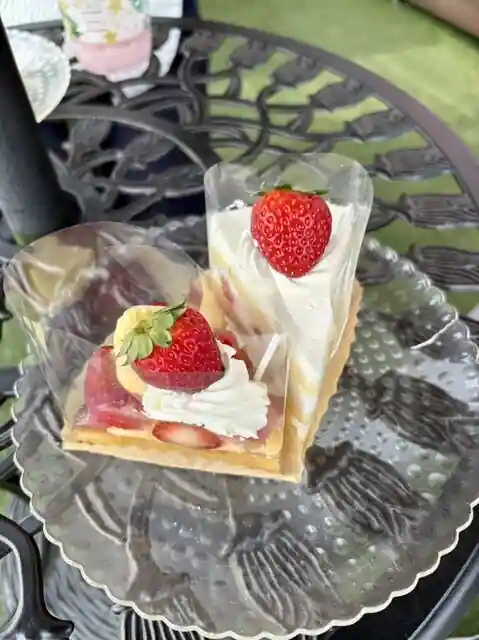
millefraise farm
てぬき庵
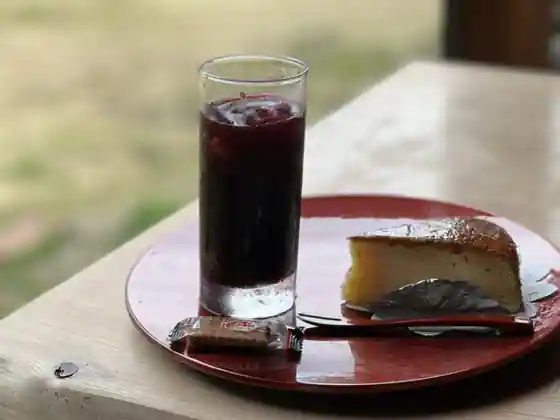
Tenuki Iori
インフィオラーレ
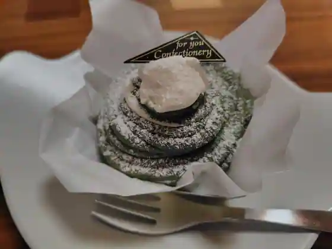
Infiorare
Salt
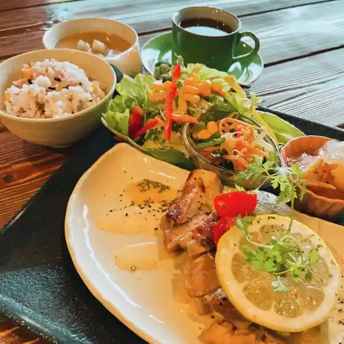
Salt
できたてスイーツ工房 道の駅大和路へぐり直営店
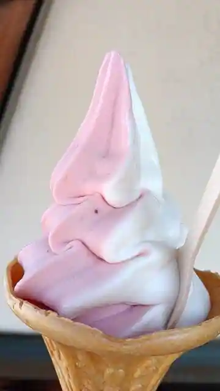
Dekitate Sweets Kobo Michi No Eki Yamato Michi Heguri Chokuei
信貴山観光アイセンター
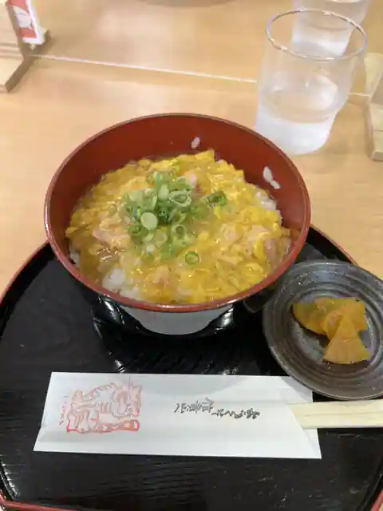
Shigi Yama Kanko Ai Center
岡田屋
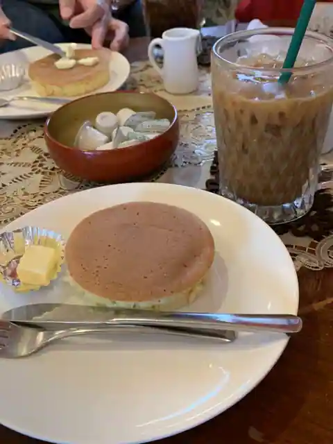
Okadaya
パンの小屋 ともぱん
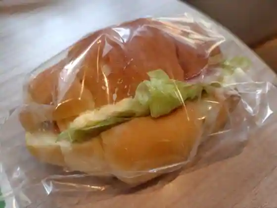
Bakery No Koya Tomopan
想いビーイング
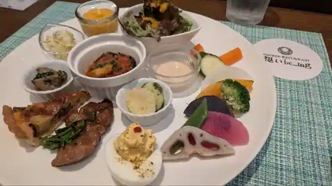
Omoi Biingu
ごはんとカフェ HANA
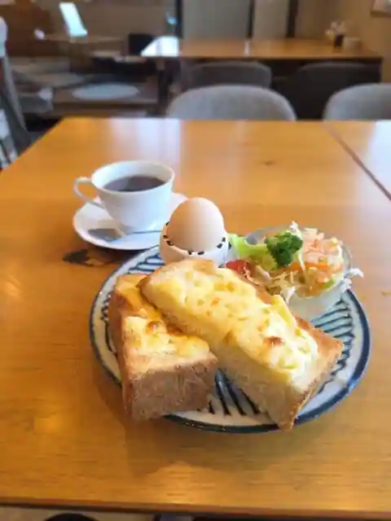
Gohanto Cafe HANA
ボン パン
Bon Bakery
喜八寿司
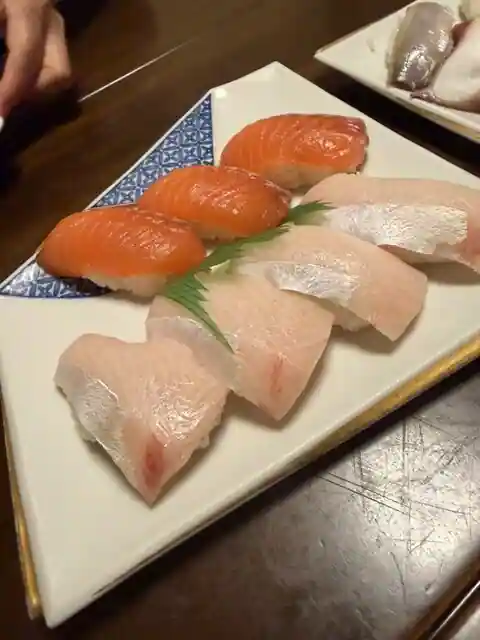
Kihachi Sushi
白いおうち
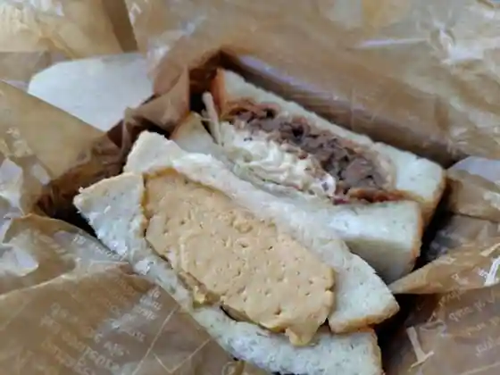
Shiroi Ochi
レストラン万葉
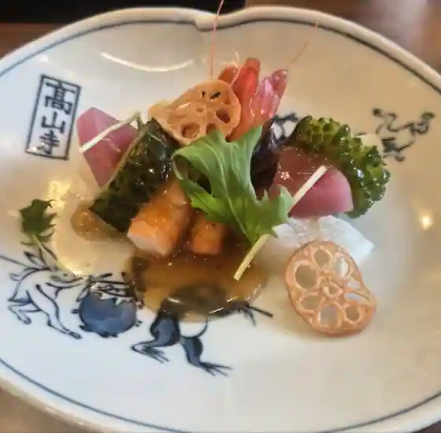
Restaurant Manyo
よってこや 平群店
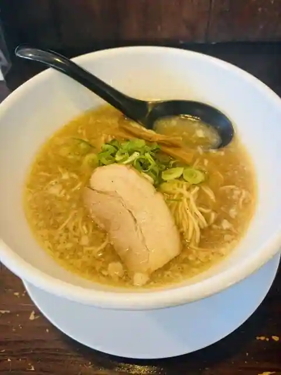
Yottekoya Heguri
Sights
Shigi Yama
Shigi Yamadai Honzan Senju In

Shigi Yamadai Honzan Tamazo In
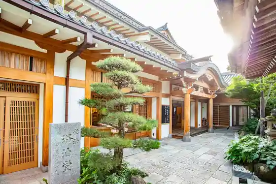
Shigi Yamanari Fuku In

Shigi Yama Chogo Sonshi Tera
Shigi Sanrei Takara Kan
Motoyama Ue Senkoji
Roadside Station Yamato Michi Heguri Kumagashi Suteshon